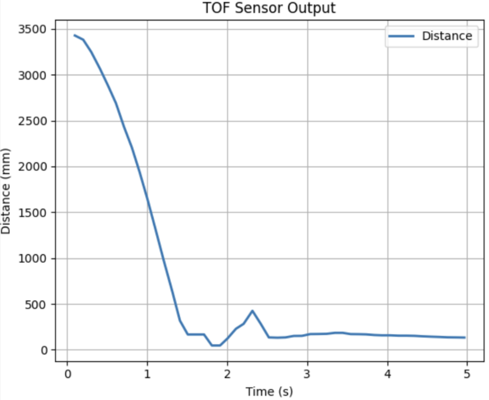
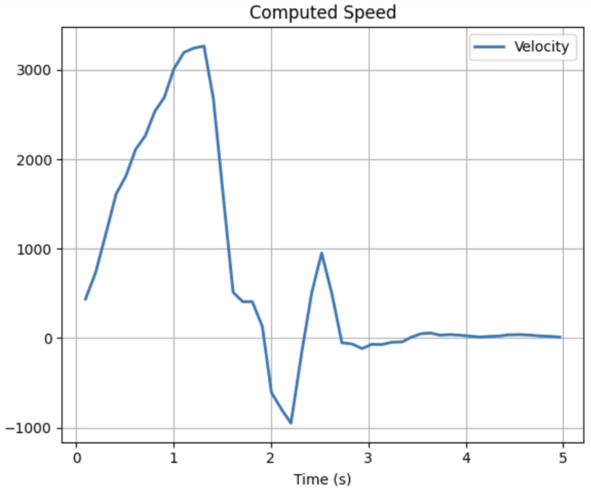
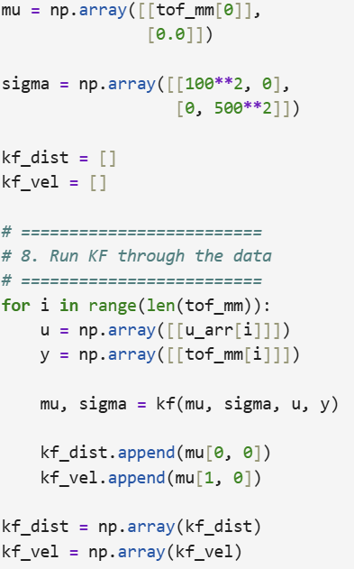
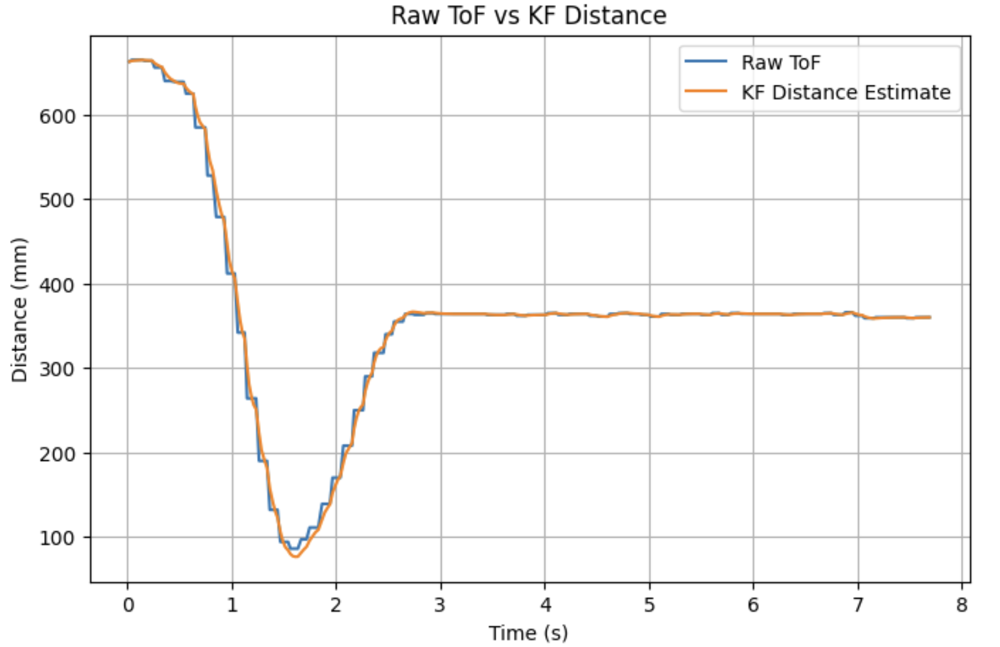
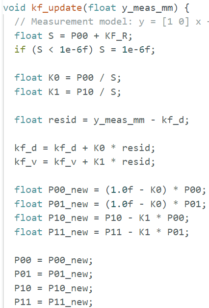

Hetao Yin (Hubery) — ECE 5160 Fast Robots
The goal of this lab was to model the robot’s 1D motion toward a wall, initialize a Kalman Filter from experimental data, and test the filter offline before moving the estimator back onto the Artemis. I first collected a step-response style dataset by driving the robot toward the wall with a fixed motor command and recording ToF distance over time. Then I estimated the system parameters, built the state-space model, and tested the Kalman Filter in Python using logged data from my earlier PID wall-control run.
To estimate the model parameters, I drove the robot toward the wall with a fixed command and logged the measured distance from the ToF sensor. The raw distance trace was then converted into velocity using finite differencing. This gave a rough step response for the robot’s forward motion. The experiment video and the two plots used for parameter estimation are shown below.


The velocity data was noisy, especially near the wall, so I only used the earlier part of the response to estimate the model parameters. From the plot, the peak/steady forward speed was approximately 3200 mm/s, so I used v_ss ≈ 3.2 m/s. Using the normalized first-order model
m v_dot + d v = uand the steady-state relation
d = 1 / v_ssI obtained d ≈ 0.3125. From the response, the 90% rise time was about 1.0 s, and using
t_90 = -(m / d) ln(0.1)I estimated m ≈ 0.136 kg. These two values were then used to construct the Kalman Filter model.
I defined the state as
x = [ distance, velocity ]^Tand used a 1D longitudinal model for motion toward the wall. Since distance decreases when the robot moves forward, I wrote the continuous-time system as
x_dot = A x + B u
A = [[0, -1],
[0, -d/m]]
B = [[0],
[1/m]]Using d = 0.3125 and m = 0.136, I constructed the matrices in Python. The log timing was about 20–30 ms per update, so I used the median sample spacing from the data as dt, and discretized the model with the first-order approximation
Ad = I + dt * A
Bd = dt * BSince the ToF sensor directly measures positive distance, the measurement matrix was simply
C = [[1, 0]]and the initial state was set from the first ToF reading:
mu0 = [[tof_mm[0]],
[0.0]]I then selected diagonal covariance matrices for the process and measurement noise. Because the measured distance was noticeably noisy and the underlying motion model was only approximate, I used a moderate measurement covariance and a relatively larger velocity process covariance:
Sigma_u = [[20^2, 0],
[0, 300^2]]
Sigma_z = [[80^2]]Increasing Sigma_z makes the filter trust the model more than the sensor, while increasing Sigma_u makes it respond more strongly to the measured data.

For offline testing, I used logged data from my Lab 5 PID wall-control experiment. The input data contained time, ToF distance, and motor command, and I fed the sequence into the Kalman Filter one sample at a time. At each step, the filter first predicted the new state from the previous estimate and input, and then updated that prediction using the current ToF measurement.
mu_p = Ad * mu + Bd * u
sigma_p = Ad * sigma * Ad^T + Sigma_u
K = sigma_p * C^T * (C * sigma_p * C^T + Sigma_z)^(-1)
mu = mu_p + K * (y - C * mu_p)
sigma = (I - K * C) * sigma_pI used the Lab 5 PID dataset because it already contained realistic closed-loop wall approach behavior, which made it a good test case for checking whether the filter produced a smoother and more stable distance estimate than the raw ToF signal. The result is shown below.

The filtered output follows the same overall trajectory as the raw ToF data, but it is smoother and removes small measurement fluctuations. This confirmed that the chosen model and covariance values were reasonable enough to proceed with the estimator design. In other words, the filter preserved the large-scale motion trend while suppressing measurement noise, which is exactly the behavior needed before integrating it into the robot control loop.
The final step was to move the filter structure back onto the Artemis and replace the simple linear extrapolation used previously. The intended control flow on the robot is:
1. Update ToF in the background
2. Predict the new KF state using the previous estimate and motor input
3. If a fresh ToF measurement is available, update the KF state
4. Use the estimated distance instead of raw ToF in the PID controllerIn code, this means the PID error should be computed from the estimated distance, not directly from the raw sensor reading:
err = setpoint_mm - est_mmwhere est_mm is the KF-estimated distance state. The estimator should run every control loop, while the measurement update only occurs when a new ToF reading is available.

Although I did not complete a full final real-time validation on the robot, the intended integration is direct: the Kalman Filter replaces the old extrapolated distance estimate and becomes the feedback signal used by the PID controller. This is the correct way to apply the filter in the control loop for this lab.
The main difficulty in this lab was not writing the Kalman Filter equations, but obtaining data that was clean enough to initialize the model and choose reasonable covariance values. The ToF signal and especially the differenced velocity were both noisy, so the parameter estimates were only approximate. Even so, the offline KF result still showed the key benefit of the filter: the estimated distance remained close to the measured trend while becoming much smoother. That is the behavior needed before replacing direct raw ToF feedback in closed-loop control.
In this lab, I used AI mainly to help organize the report structure, discuss debugging ideas, and refine the Kalman Filter implementation workflow.